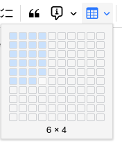
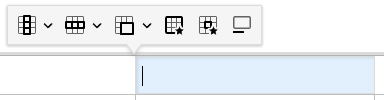
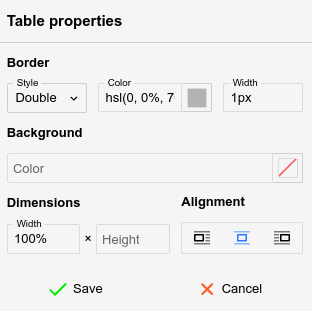
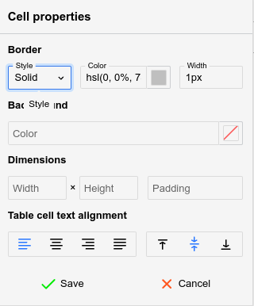

Tables are a powerful feature for Text notes,
since editing them is generally easy.

To create a table, simply press the table button and select with the mouse
the desired amount of columns and rows, as indicated in the adjacent figure.
Since v0.107.0, the same menu starts with an Insert table… item,
for a table larger than the grid or to type its size instead:
Click the button and select Insert table….
A small form opens at the cursor.
Enter the number of Rows (up to 1000) and Columns (up to
100). The table can have at most 5000 cells in total, for example 1000
rows of 5 columns.
Press Insert or Enter.
To close the form without inserting a table, press Esc or click
outside it. From the keyboard, Tab moves between Insert table… and
the grid while the menu is open.
Formatting toolbar
When a table is selected, a special formatting toolbar will appear:

Context menu
Since v0.106.0, right-clicking anywhere inside a table opens a context
menu with the most common table operations:
Insert row above and Insert row below insert a blank row
next to the row of the current cell. When the selection spans multiple
rows, the same number of rows is inserted.
Insert column to the left and Insert column to the right work
the same way for columns.
Merge cells merges the selected cells into one. The selected cells
must form a rectangle.
Split cell splits each selected cell in two, either Vertically or Horizontally. Unmerge cells,
in the same submenu, turns each merged cell in the selection back into
the single cells it covers, keeping its content in the top-left one; cells
that are not merged stay as they are.
Distribute columns evenly splits the combined width of the columns
the selection touches equally between them. The other columns and the width
of the table stay as they are. It needs a selection spanning at least two
columns; a merged cell counts for every column it covers.
Cut, Copy and Copy as Markdown act on the selected
cells:
Cutting or copying produces a smaller table holding just the selected
cells. Pasting it over a cell selection replaces those cells; pasting elsewhere
inserts it as a table of its own. Cutting clears the cells without removing
rows or columns.
Copy as Markdown converts the selected cells to a Markdown table.
A selected header row becomes the Markdown header; without one, an empty
header row is emitted, since Markdown tables require one.
Sort, below the clipboard section, sorts the rows by the column
of the current cell, in Ascending or Descending order. See Sorting rows.
Delete row and Delete column, below Sort, remove
every row or column the selection touches, even when only some of their
cells are selected.
Delete table removes the whole table and leaves an empty paragraph
in its place. In a table nested inside another, only the inner table is
removed.
Right-clicking a cell that is not part of the current selection moves
the cursor there first, so the menu always applies to the cell under the
pointer.
Navigating a table
Using the mouse:
Click on a cell to focus it.
Click the button
at the top or the bottom of a table to insert an empty paragraph near it.
Click the button
at the top-left of the table to select it entirely (for easy copy-pasting
or cutting) or drag and drop it to relocate the table.
Using the keyboard:
Use the arrow keys on the keyboard to easily navigate between cells.
It's also possible to use Tab to go to the next cell and Shift+Tab
to go to the previous cell.
Unlike arrow keys, pressing Tab at the end of the table (last
row, last column) will create a new row automatically.
To select multiple cells, hold Shift while using the arrow keys.
Resizing cells
Columns can be resized by hovering the mouse over the border of two adjacent
cells and dragging it.
To give several columns the same width, select cells across them and choose Distribute columns evenly from
the button of the formatting
toolbar or from the context menu.
By default, the row height is not adjustable using the mouse, but it can
be configured from the cell settings (see below).
To adjust exactly the width (in pixels or percentages) of a cell, select
the button.
Inserting new rows and new columns
To insert a new column, click on a desired location, then press the button from the formatting
toolbar and select Insert column left or right.
To insert a new row, click on a desired location, then press the button and select Insert row above or below.
A quicker alternative to creating a new row while at the end of the table
is to press the Tab key.
Both operations are also available in the context menu,
which inserts as many rows or columns as the selection spans.
Moving rows and columns
Since v0.106.0, rows and columns can be reordered with the keyboard:
Alt+Up and Alt+Down move the
rows touched by the selection up or down.
Alt+Left and Alt+Right move the
columns touched by the selection left or right.
Merged cells are never split by a move. The rows or columns held together
by a merged cell travel as one block, and moving toward such a block jumps
over it entirely.
When the table has a header row, a header row moved below the header area
becomes a regular row, and a regular row moved into the header area becomes
a header row. Header columns behave the same way.
Outside of tables, Alt+Left and Alt+Right keep
navigating the note history, and Alt+Up and Alt+Down keep
moving the current paragraph.
Sorting rows
Since v0.107.0, the rows of a table can be sorted by the values of one
column:
To sort all the rows, place the cursor in any cell of the column to sort
by, then select Sort → Ascending or Descending from
the context menu. The same items are in the button of the formatting toolbar.
To sort only some of the rows, select their cells in the column to sort
by, then sort the same way. Sorting is not available while the selection
spans more than one column.
Header rows always stay at the top of the table and are never sorted.
A sort can be undone with Ctrl+Z.
How values are compared
Each cell is read as plain text, so formatting does not affect the order.
Trilium then detects what kind of value the cell holds:
Kind
Examples
Compared by
Time
15:02, 15:02:38, 3:02 PM
The time of day.
Date
2026-09-30, 2026-09-30 15:02, 30 September 2026, Wednesday, 30 September 2026, 2026-09-30T15:02:38+03:00
The date and time.
Number
12, -3.5, 1,234.56, $ 12.04, 21 RON, 24.5m
The numeric value.
Text
Anything else.
Alphabetically, with numbers inside the text in numeric order (Item 9 before Item 10).
Empty
An empty cell, or one holding only spaces.
Not compared. Empty cells always go last.
Ascending order puts times first, then dates, numbers and text. Descending
order reverses it. Empty cells go last in both directions, and rows with
equal values keep their relative order.
Dates are also recognized in the formats of the note's language, such
as 30.09.2026 or 30. September 2026 for German, and
in the format chosen in Options → Text Notes → Editor → Date/time format for inserting the date and time.
A number can start with a currency symbol, such as $, € or £.
Whatever follows the number, such as a unit, is ignored, so units are not
converted: 1 km sorts before 500 m. A cell that
starts with letters, such as RON 21, is text.
The decimal separator follows the language of the note: 1.500 is
one and a half in English, but one thousand five hundred in German. A comma
or period that is not followed by exactly three digits is always read as
a decimal separator, so 1,5 is one and a half in either language.
Rows joined by a merged cell are kept together and move as one block.
The block is sorted by the value in its first row. When the block has more
than one cell in the sorted column, the other cells do not affect the order,
and a message says so: Some rows were sorted together because merged cells tie them to each other.
When the selection covers only part of such a block, the whole block is
sorted.
Merging cells
To merge two or more cells together, simply select them via drag &
drop and press the button
from the formatting toolbar.
More options are available by pressing the arrow next to it:
Click on a single cell and select Merge cell up/down/right/left to merge
with an adjacent cell.
Select Merge selected cells to merge the selected cells, the same
as pressing the button itself.
Select Split cell vertically or horizontally, to split
a cell into multiple cells (can also be used to undo a merge).
Select Unmerge cells to turn each merged cell in the selection
back into the single cells it covers, keeping its content in the top-left
one.
Merge selected cells and Unmerge cells are available since
v0.107.0. Merging and splitting are also available by right-clicking the
selected cells, via the context menu, where Unmerge cells is
in the Split cell submenu.
Table properties

The table properties can be accessed via the button
and allows for the following adjustments:
Border (not the border of the cells, but the outer rim of the table),
which includes the style (single, double), color and width.
The background color, with none set by default.
The width and height of the table in percentage (must end with %)
or pixels (must end with px).
The alignment of the table.
Left or right-aligned, case in which the text will flow next to it.
Centered, case in which text will avoid the table, regardless of the table
width.
The table will immediately update to reflect the changes, but the Save button
must be pressed for the changes to persist.
Cell properties

Similarly to table properties, the button
opens a popup which adjusts the styling of one or more cells (based on
the user's selection).
The following options can be adjusted:
The border style, color and width (same as table properties), but applying
to the current cell only.
The background color, with none set by default.
The width and height of the cell in percentage (must end with %)
or pixels (must end with px).
The padding (the distance of the text compared to the cell's borders).
The alignment of the text, both horizontally (left, centered, right, justified)
and vertically (top, middle or bottom).
The cell will immediately update to reflect the changes, but the Save button
must be pressed for the changes to persist.
Caption
Press the button to
insert a caption or a text description of the table, which is going to
be displayed above the table.
Table borders
By default, tables will come with a predefined gray border.
To adjust the borders, follow these steps:
Select the table.
In the floating panel, select the Table properties option ().
Look for the Border section at the top of the newly opened panel.
This will control the outer borders of the table.
Select a style for the border. Generally Single is the desirable
option.
Select a color for the border.
Select a width for the border, expressed in pixels.
Select all the cells of the table and then press the Cell properties option
().
This will control the inner borders of the table, at cell level.
Note that it's possible to change the borders individually by selecting
one or more cells, case in which it will only change the borders that intersect
these cells.
Repeat the same steps as from step (2).
Tables with invisible borders
Tables can be set to have invisible borders in order to allow for basic
layouts (columns, grids) of text or images without
the distraction of their border:
First insert a table with the desired number of columns and rows.
Select the entire table.
In Table properties, set:
Style to Single
Color to transparent
Width to 1px.
In Cell Properties, set the same as on the previous step.
Table indentation
Since v0.104.1, tables can be indented as a block (the whole table moves,
rather than just the content of a cell).
Click the button
to select the entire table. Otherwise, the indentation applies only to
the current cell's content.
Press Tab to increase the indent, or Shift+Tab to
decrease it. Alternatively, use the indentation buttons in the formatting
toolbar.
Markdown does not support indented tables, so the indentation is lost
when converting to Markdown.
Markdown import/export
Simple tables are exported in GitHub-flavored Markdown format (e.g. a
series of | items). If the table is found to be more complex
(it contains HTML elements, has custom sizes or images), the table is converted
to a HTML one instead.
Generally formatting loss should be minimal when exported to Markdown
due to the fallback to HTML formatting.